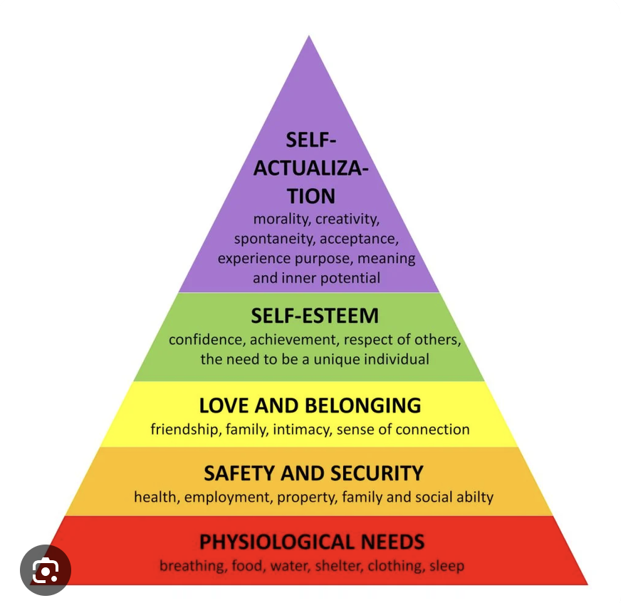
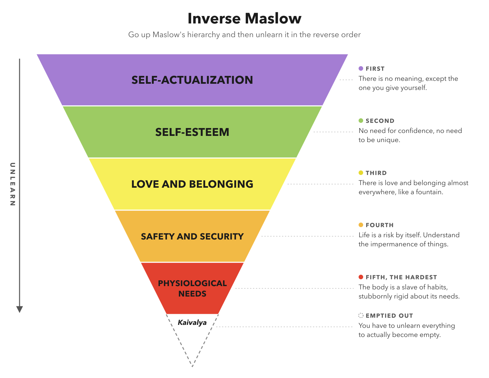

Everyone knows Maslow’s hierarchy but we have become stupidly ignorant about it as well. Almost all of us studied it somewhere on our school education but didn’t give it much of a thought. I was discussing this with my sister when I realized that she hadn’t really thought about what moving abroad brought in her life as a result. Here, she was representative of a normal youth in this country.
Many people think they move up in Maslow’s hierarchy when they leave the country. Yet in some cases they are even worse off because of it. Being away from family, alone to not get enough care when you are sick and so on. Just for the sake of better employment, we end up putting ourselves in a different yet equally miserable situation.
You don’t even move up a rung just by going there. You lose a significant bit. If you cannot help it, you will be stuck right there. I was trying to show her that the life that you get in US isn’t necessarily awesome compared to the life you get here in Nepal or countries like ours. There is something you gain and something you lose as well when moving abroad. But during the discussion, I realized that there was a new hidden dimension to this hierarchy as well which I will discuss later. But first, lets talk about moving up in this ladder.

Getting to the top
To really understand yourself, you have to be able to go up first. Understand the journey. First, you fulfill your physiological needs. Pretty basic and self-explanatory.
Second, you build capability enough to earn for yourself: a home as well as a decent enough safety net for health.
Third, you start by giving love and communicate it clearly. That way you’ll revive even withered friendships. You learn to lower your expectations and give more. You’ll automatically receive what you need on this layer.
Fourth, you start figuring out things about yourself and your expression. Then you will understand what you are good at and slowly learn to master it. I left my job after a year as I figured out what I loved doing, and then slowly built towards that.
Fifth, you have to really understand yourself deeply to master this layer. You have to first understand your self. What makes you you. Your emotions, preferences, biases, knowledge, capabilities, fears, etc. and it has to be in accord with reality. Often times, we choose to live in imagination than accept what’s true. So, need to be extremely wary of that here. In the process, you come to understand others as almost you. Then that makes you empathetic, moral automatically without anyone asking you to. You understand how you can contribute to the betterment of the world around you as well.
If you read my previous yearly reviews, I’ve traced my journey towards self-actualization year by year. Then only can you open this new dimension.
A new dimension

In that process, I came to realize that there is more to this. My learning and unlearning didn’t stop there. I was curious to understand what I was moving towards, and this was the conclusion I came to. It doesn’t stop there at self-actualization. There is an inverse maslow that starts right there. You have to unlearn everything to actually become empty. To reach “Kaivalya”.
First, you unlearn the top by realizing that there is no meaning, except the one you give yourself. Morality, purpose, meaning all are creations of our own mind.
Second, you unlearn that there is no need for confidence, no need to be unique. There is no achievement that’s worthy in any way.
Third, you unlearn to feel love only in familiar connections. You learn that there is love and belonging almost everywhere like a fountain.
Down until third, everything is almost a mental phenomenon. It has its roots in your mind. Your mind is much more malleable than your body.
Fourth, you unlearn the need for safety. This is partially mental, and partially environmental. Here, you have to understand that life is a risk by itself. It’s almost bound to wither away anyway.
And since you have gathered enough wordly knowledge on the way to the apex on the bottoms-up path, there is no way you won’t be able to bring basic safety and security in traditional sense. Understanding the impermanence of things, you will master this rung as well.
Fifth is the hardest. It’s strictly limited to your own body. Your body has its own way. Even when you know the impermanence of your body, your body will still ask for food, water, sleep, air etc. Few heavy meditators have demonstrated slowing their breath etc. in lab conditions. Except that, there isn’t much scientific evidence to you not needing to breathe, or eat, or even sleep for that matter. Hypothetically, those who master the final rung on the bottomward path are called “Siddhas”. Tummo ( raising body temperature in freezing cold temperatures practiced by Tibetan Monks ), rainbow body, various siddhis since they are able to master even the body, not just the mind. You think mind is hard to control but body is a slave of habits. Its stubbornly rigid about its needs. That’s how everything gets emptied out.
So, learn to move up and down to be finally free. If you have any comments or questions, send it my way.